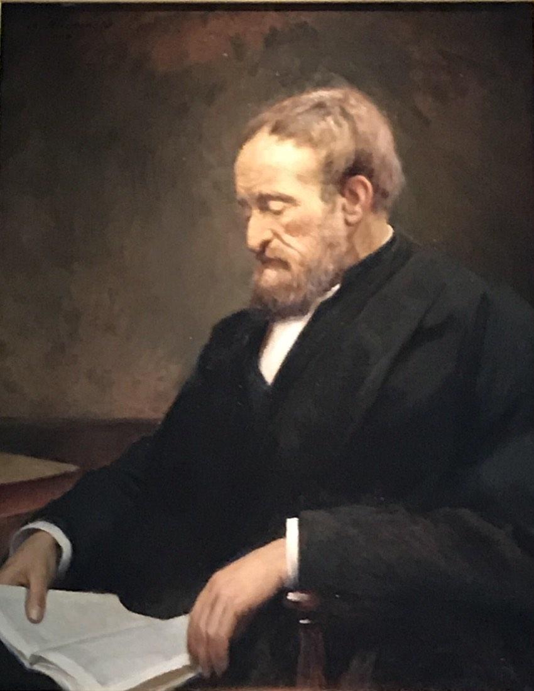
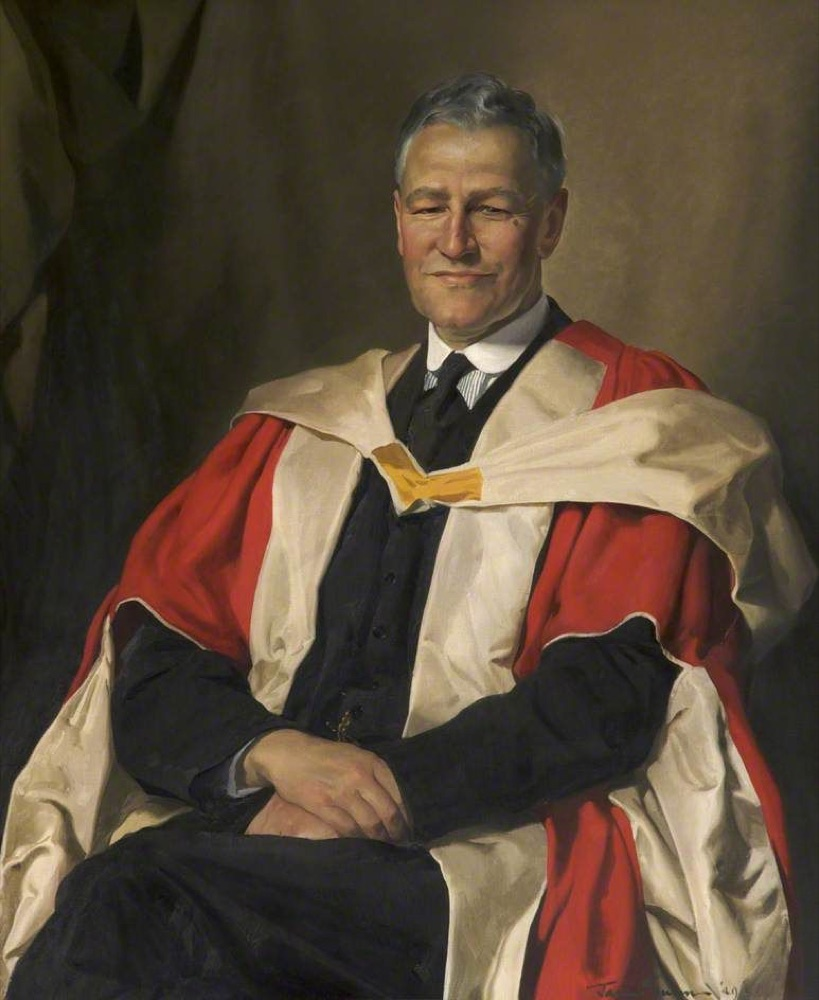
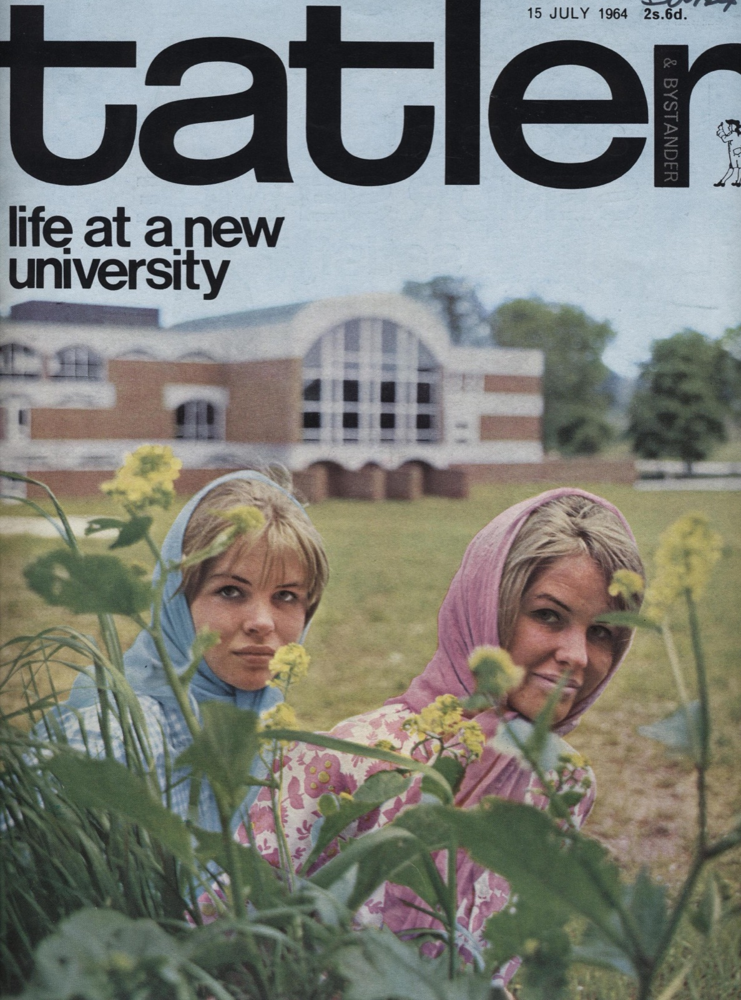

What is a university for?
Sussex was unusual among institutions in that it had to answer a question before it could open its doors: not where, or how large, but what a university was actually for. It was conceived as an experiment in the idea of the university itself, at a moment when that idea was felt to be in crisis. To understand the university that opened at Falmer in 1961 is to follow an argument about higher education that had been running for over a century.
Newman, the German model, and the Victorian reform

Two ideas of the university stood behind the British debate. One was John Henry Newman’s vision of a community for the cultivation of the intellect and the transmission of a shared culture. The other was the German research university, the Humboldtian model that married teaching to original inquiry and that, by the later nineteenth century, had become the envied standard of the scholarly world.
In Victorian Oxford, reformers such as Mark Pattison argued for moving the university towards learning and the endowment of research, against a college system geared mainly to examination. These competing emphases, the cultivation of persons, the transmission of culture, and the advancement of knowledge, were the inheritance that any new university of the twentieth century would have to reconcile.
A diagnosis of drift

The most influential statement of the problem was Walter Moberly’s The Crisis in the University (1949). Written by the outgoing Chairman of the University Grants Committee and widely read in government and academia, it diagnosed a drift in the existing universities, a loss of any clear, agreed sense of direction and purpose.
Moberly’s anxiety was sharpened by recent history. The German universities had enjoyed the highest intellectual prestige in the world, and yet under the Nazi regime they had shown, in his words, little resistance, becoming an instrument for manipulating public opinion. If even the most distinguished universities could fail so completely, the question of what a university was for, and what values it should sustain, could no longer be taken for granted.
Drawing on critics such as ‘Bruce Truscot’ and on Ortega y Gasset, Moberly argued that universities had come to confuse appearance and reality: claiming to educate rounded persons while turning out narrow specialists, and to cultivate critical judgement while deferring to the unexamined assumptions of the day. The remedy was not less specialisation but a setting in which specialised study could be related to a wider sense of culture and value.
Redrawing the map of learning

Sussex was designed as an answer to this diagnosis. Rather than reproduce the departmental organisation of the civic universities, which Asa Briggs criticised as ‘departmentalism’, it set out to redraw the map of learning. Knowledge would be organised into schools of study in which a major discipline was read alongside contextual subjects, so that fields illuminated one another instead of sitting, as Briggs put it, like inhabitants of separate continents.
The principle was the interdependence rather than the independence of subjects. A Sussex arts degree was modelled on Oxford’s Modern Greats; the sciences combined fields such as physics and biology into biophysics. Teaching rested on the small-group tutorial, where students learned by writing and argument rather than by the passive collection of unanalysed material. Behind it lay John Fulton’s conviction, shaped by Scottish and Oxford traditions alike, that education was a preparation of the whole person for a free society, captured in the motto he chose from Psalm 46: Be still and know.
Crucially, Sussex did not claim to have drawn the final map of learning. It offered, rather, an institutional setting in which the drawing and redrawing of such maps could go on: a university with a sense of direction, a compass rather than a fixed chart, in which research and teaching were treated as two aspects of one activity, the advancement of learning.
As the funding climate tightened after the mid-1960s, Sussex’s self-image as an experimental laboratory for the idea of the university gave way to its place among the ‘plate-glass universities’, the term Michael Beloff introduced in 1968. But the questions that had brought it into being, what a university is for and who keeps its conscience, remained central to its identity. See The Founding for how these ideas were put into practice.
Sources
This account follows the argument of Berry (2024), drawing on Moberly’s Crisis in the University (1949), Briggs’s ‘Drawing a New Map of Learning’ (1964), and Fulton’s ‘New Universities in Perspective’ (1964). Full references are on the Sources page.